Sjørring Vold
ehemalige Burganlage


20 - Sjørring Vold - Letztes Update 07.04.2025
| Navidaten: 56.95040 8.58564 oder: Vorupørvej 60, 7700 Thisted |
Im Rahmen meiner 2022er Jütland Wikingertour nahm ich mir mal wieder die Zeit und war am Mittwoch, 01.06.2022, vor Ort. Dies war erst mein zweiter Besuch überhaupt. Das erste und bis dahin einzigeste Mal war ich am Dienstag, 21.08.1990, hier gewesen. Siehe das einfache Foto im linken Frame. Wie die Zeit vergeht! Das ist mehr als 30 Jahre her! Diesmal habe ich mir Zeit lassen können und etliche Fotos gemacht.
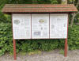 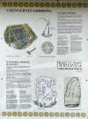 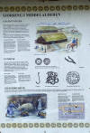 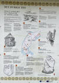 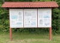 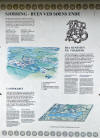 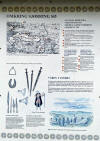 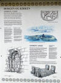 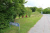 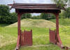


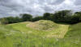 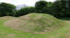 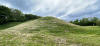 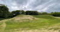 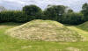 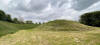 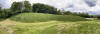 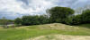 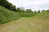 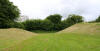


Auf der einen Infotafel vor Ort sieht man diesen Rekonstruktionsversuch in Form einer Zeichnung, die ich hier über ein eigenes Foto wiedergebe.

Darüber versteht man gleich zu Anfang meiner Ausarbeitung zu Sjørring Vold vielleicht am besten was wir hier vor uns haben.
Diese sw Höhenschichtenkarte von 1953 ist dem Werk aus dem Jahr 1957 mit dem Titel "Danske Voldsteder. Fra Oldtid og Middelalder. Tisted Amt" aus dem Verlag des Nationalmuseum in Kopenhagen entlehnt. Die Autoren sind Hans Stiesdal (*06.05.1922 - 02.09.1998, Dänischer Historiker und Archäologe - Bildnis der Person) und Vilhelm la Cour ( *23.12.1883 - 22.06.1974, dänischer Historiker - Link-Lives - Bildnis der Person). Die beiden rechteckigen Raster zeigen den Verlauf von zwei festgestellten Brücken, der Stern steht für den heutigen Eingang in die Anlage.
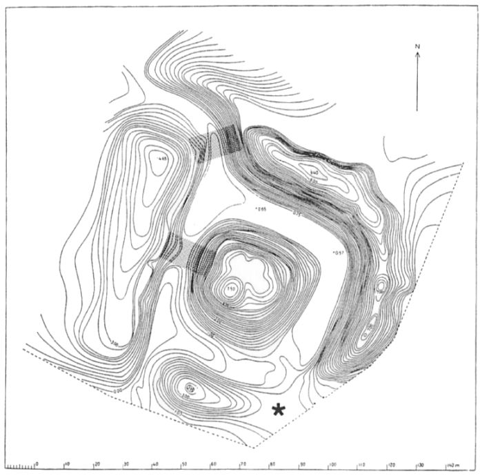
Von Ole Worm (*13.05.1588 - 31.08.1654, Arzt, Universalgelehrter und der Begründer der Runologie)
 Bildquelle:
Digitale Sammlung der Königlichen Bibliothek Kopenhagen -
Lizenz:
Public Domain
Bildquelle:
Digitale Sammlung der Königlichen Bibliothek Kopenhagen -
Lizenz:
Public Domain
war 1622 der dänische König Christian IV. (*12.04.1577 - 28.02.1648)
 Bildquelle:
Wikipedia - Lizenz:
Public Domain
Bildquelle:
Wikipedia - Lizenz:
Public Domain
dazu bewogen worden am 11. August 1622 einen Brief an die Bischöfe von Dänemark und Norwegen zu senden, um darüber die Pfarrer im Land aufzufordern alle Informationen zu Denkmälern, Runensteinen, Grabhügel usw. an ihn zu melden, um die älteste Geschichte Dänemarks zu beleuchten. Unterstützer oder gar treibende Kraft war wohl Christian Friis (*4. November 1581 auf Gut Krastrup in Farstrup - 01. Oktober 1639, dänischer Adliger und königlicher Kanzler).
 Bildquelle:
Wikipedia - Lizenz:
Public Domain
Bildquelle:
Wikipedia - Lizenz:
Public Domain
#/media/Datei:Fotoreproductie_van_een_schilderij,_voorstellende_een_portret_van_Christian_Friis_til_Kragerup_Christian_Friis_(til_Kragerup)_(titel_op_object),_RP-F-2001-7-742-16.jpg){kind=link}
Der Originaltext dieses Briefes lautet auszugsweise: "Wor gunst tillforn. Wy bede Eder och wille, at I Eders mueligste flid ahnwender allewegne wdj Eders stigt att opsøge och antegne alle slags antiquiteter och documenter effter medfølgende fortegnelsis indhold, och att I saadanne med flid lader optegne och engang inden Paaske førstkommendis wdj wortt cantzelie lader indleffuere. Dermed skie wor willghe. Befalendis Eder Gud. Skreffuitt paa wortt [slott] Kiøbenhaffn, den 10. augusti anno 1622. Vnder vort signett.Christian."
Als Antwort darauf gab der damalige, örtliche Pastor Janus Spendius am 22. November 1638 einen Bericht ab, in dem er die Bezeichnung "Siøring valdt" verwendete (Indberetninger fra Præsterne i Aalborg Stift 1638 gesammelt von Hans Knudsen, Samlinger til jydsk historie og topografie, udgivne af det jyske Historisk-Topografiske Selskab, 4. Række, I. Bind, Kopenhagen, 1911-14 In der pdf-Datei S. 53-54, eigentliche Seitenzahl 123-124).
Der Ortsname Sjørring taucht aber auch schon in mittelalterlichen Handschriften auf, allerdings in den sonderbarsten Schreibweisen. In einer Quelle von 1231, dem "Kong Valdemars Jordebog" (Eine Auflistung königlicher Ländereien) wird von Syroændae gesprochen, und in der isländischen Knytlinga Saga von etwa 1250 wird der Ort Sævarenda genannt.
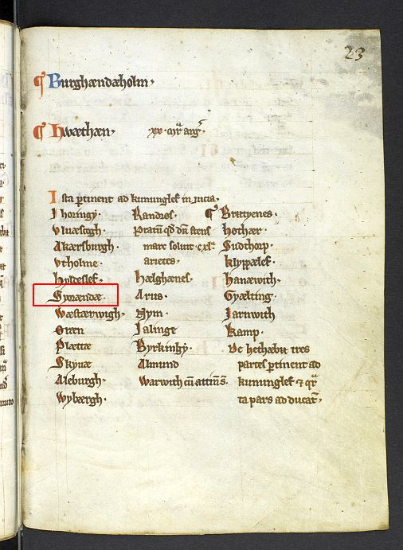
Entsprechende Seite aus "Kong Valdemars Jordbog" - rote Umrandung bei "Syroændae" von mir eingefügt (Gemeinfrei) - Eine Übersetzung - allerdings nur ins Dänische - findet sich hier.
Das Wort "Sjørring" bedeutet am Ende des Sees, denn der Ort lag ehemals direkt neben dem Sjørring See, der jedoch in den Jahren 1858-62 trockengelegt wurde. Es war ein ca. 850 ha großer, ca. 8 km langer, flacher See, der eine wimmelnde Fischpopulation und riesige Schwärme verschiedener Wasservögel beherbergte, die auf kleinen Inseln lebten. Der Seeboden lag ca. 11 m über dem Meeresspiegel der benachbarten Nordsee (ca. 13 km westlich von Sjørring Vold), so dass hier keine Verbindung vorlag.
Der benachbarte, kleinere Sperring See - ca. 132 ha groß - sollte schon 1847 trockengelegt werden. Wirklich erfolgreich war man damit aber erst 1876-78. Die Durchführung wurde von Hauptmann Jens Christian Henrik Claudius Jagd (*27.04.1821 - 27.07.1895, Schulleiter, Hauptmann, Erfinder, Unternehmer, Gutsbesitzer, Politiker, Landrat, Zeitschriftenverleger - link-LIVES - Begräbnisprotokoll)
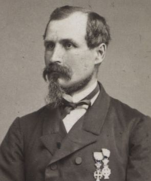
veranlasst, der darüber 850 ha Land der landwirtschaftlichen Nutzung - vorwiegend der Schweinezucht - zuführen konnte.
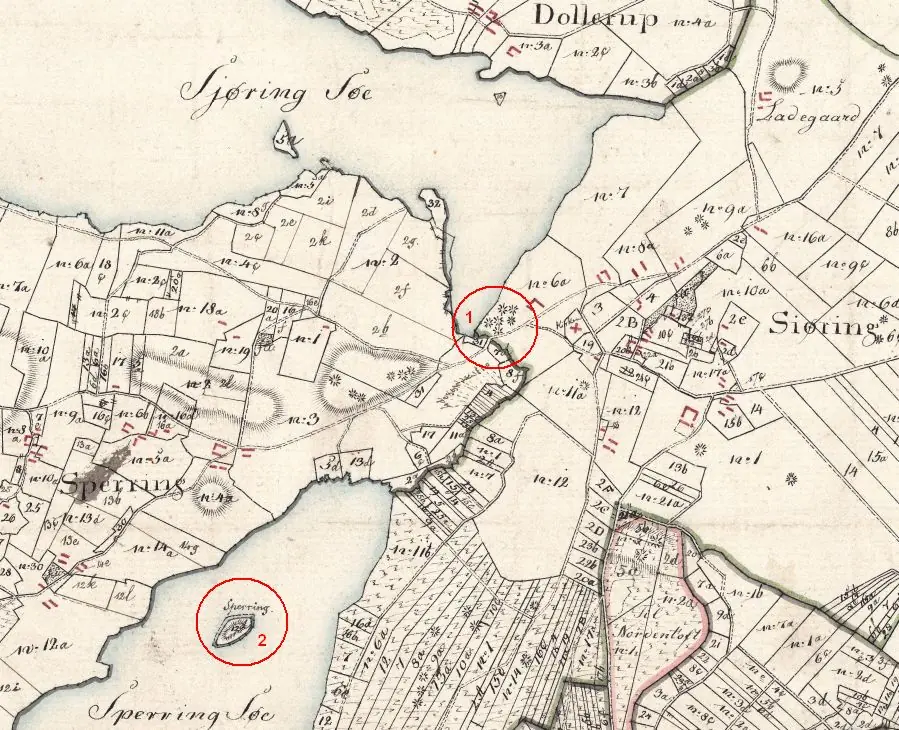
Dieser Ausschnitt einer Karte von 1816 mit dem Titel "Sjøring Sogn" zeigt zu "1" den Sjørring Volde und im Sperring See eine weitere Burg-/Wallanlage zu "2" - beide Seen existieren heute nicht mehr.
Karte stammt aus dem Internet von der dänischen Behörde "Styrelsen for Dataforsyning og Effektivisering" - Download 06.03.2022 - freie Verwendung erlaubt - hier abgerufen.
Warum haben sich nun die isländischen Schreiber für diesen Fleck auf der Karte von Thy interessiert? Die Knytlinga Saga erzählt, dass Knut IV. der Heilige (*1080 - 10.07.1086 König von Dänemark) Zuflucht auf seinem Königshof Sævarenda suchte, als die Bevölkerung in Nordjütland 1086 gegen ihn aufstand. Dagegen sprechen andere zeitgenössische Chronisten davon, dass sich Knut IV. der Heilige vielmehr zur Aggersborg zurückzog.
Es steht jedoch fest, dass Sjørring Volde am Ende der Wikingerzeit eine königliche Burg war. Später, jedenfalls im 14. Jahrhundert, kam Sjørring Volde in private Hand. Im Jahre 1873 erwarb dann Niels Kristian Pedersen (Vigh) (*11.05.1819 - 22.06.1900) den Brogaard in Sjörring. Zu dem Kauf gehörte auch der alte historische Sjørring Volde. Noch Mitte des 19. Jahrhunderts war Sjørring Volde einigermaßen gut erhalten, mit Ausnahme des Teils im Westen und Süden, der bebaut wurde. 1859 schrieb und klagte Kaufmann Griishauge aus Thisted an den Direktor des Altnordischen und Ethnographischen Museums, Christian Jürgensen Thomsen (*29. Dezember 1788 - 21. Mai 1865, dänischer Altertumsforscher und Begründer des Dreiperiodensystems, nach dem die europäische Urgeschichte in Steinzeit, Bronzezeit und Eisenzeit zu unterteilen ist):
 Bildquelle:
SMK Open - Lizenz:
Public Domain
Bildquelle:
SMK Open - Lizenz:
Public Domain
Dass die Wälle gepflügt und besät werden, und dadurch von Jahr zu Jahr mehr und mehr verschwinden. Er schlug C. J. Thomsen vor die Wälle anzukaufen oder den Besitzer vom Staat enteignen zu lassen. Der Brief von Griishauge ging in Auszügen auch an den damaligen Inspektor für die Erhaltung der antiquarischen Denkmäler, Prof. Jens Jacob Asmussen Worsaae (*14.03.1821 - 15.08.1885, dänischer Archäologe und Vorgeschichtler - link-LIVES),
 Bildquelle: Fotografie
zw. 1863-1900 von Fotograf Budtz Müller
(*26.12.1837 -
30.12.1884) -
Det Kgl. Biblioteks billedsamling - Lizenz:
Public Domain
Bildquelle: Fotografie
zw. 1863-1900 von Fotograf Budtz Müller
(*26.12.1837 -
30.12.1884) -
Det Kgl. Biblioteks billedsamling - Lizenz:
Public Domain
der keine Möglichkeit sah die Anlage zu schützen. Im Jahre 1880 schrieb der neu ins Amt gekommene geschichtsinteressierte Gemeindepfarrer von Sjörring, Georg Christian Madelung (*16.01.1845 - 15.05.1912, Pfarrer in Sjørring von 1880-1912 - Foto seines Grabsteins - link-LIVES),
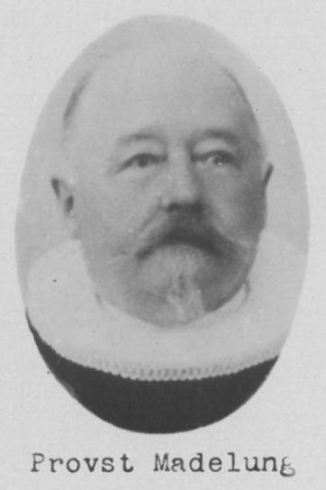
Bildquelle: Trøst-Hansens sognekort - Nr. 2922 - Lizenz: Public Domain
ebenfalls an Prof. Jens Jacob Asmussen Worsaae, um das Thema "Schutz der Anlage" erneut anzusprechen. Madelung glaubte, dass der inzwischen genehmigte Bau der Eisenbahn einen Teil des Walls bedrohen könnte.
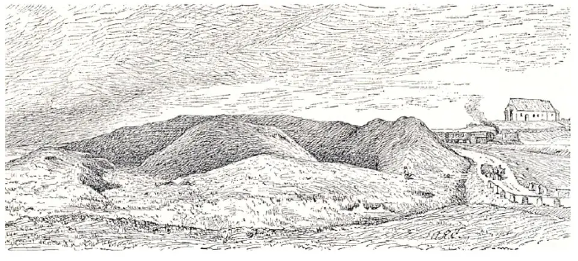
Hinter Sjørring Vold fährt der Zug auf der 1882 eingeweihten Eisenbahnstrecke. Die Befürchtung, dass der Wall durch den Bau der Eisenbahn Schaden nehmen würde, führte 1885 zu seinem Schutz. Die Kirche erhielt ihren Turm erst 1929. Bei dem Künstler dieser Zeichnung von 1864 handelt es sich um Andreas Riis Carstensen (*09.11.1844 - 05.05.1906, dänischer Maler - link-LIVES), der in der Nähe von Thisted, in Sennels (ca. 7 km östlich), geborden wurde.
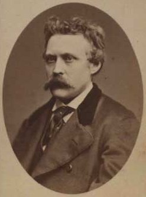
Bildquelle: Wikipedia - Aufnahme von 1867 - Lizenz: Public DomainMit Datum 08. September 1885 wurde die Anlage dann erstmals unter Schutz gestellt. Dies war von dem neuen Eigentümer, Johannes Conrad Nyeboe (*04.03.1830 - 05.03.1908, Gastwirt des Koldby Kro, Bildnis seines Grabsteins auf dem Friedhof in Hørdum - link-LIVES)
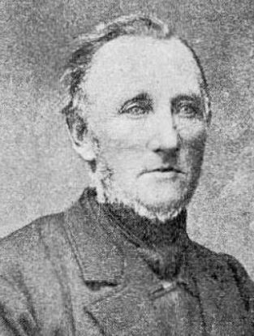
Bildquelle: Johannes Nyboe ved Chr.Larsen - Text von 1937 - Lizenz: CC BY-SA 4.0aus freien Stücken erklärt worden. Er übertrug das Areal dem Staat und die Aufsicht der Altertümerbehörde in Kopenhagen. Zum Dank erhielt er von dort ein großes silbernes Trinkhorn geschenkt. Dazu gab es in der wichtigen und ältesten dänischen Tageszeitung "Berlingske Tidende" einen Beitrag, der auch in der Zeitung "Thisted Amts Tidene", Ausgabe vom 12. September 1885, wiedergegeben wurde. Darin wird Johannes Conrad Nyeboe ausdrücklich für sein Engagement und die großzügige Geste gelobt:

Zu seinem Begräbnis auf dem Kirchhof von Hørdum am 13.03.1908 erhielt Nyeboe zum Dank vom Nationalmuseum eine große Palmendekoration für seiner Bahre. Sein Eintrag ins Sterberegister kann online abgerufen werden - hier von mir zusammengeschnitten.

Am 01. April 1970 erwarb das Kulturministerium das Gelände - ca. 2,75 Hektar - für 40.000 Kronen. Dann ging der Besitz an die Forst- und Naturbehörde (Skov- og Naturstyrelsen) über. Die war früher eine dem Umweltministerium unterstellte Behörde. Mit Wirkung vom 1. Januar 2011 wurde die dänische Forst- und Naturbehörde (Skov- og Naturstyrelsen) mit der dänischen Stadt- und Landschaftsbehörde (By- og Landskabsstyrelsen) unter dem Namen Dänische Naturbehörde (Naturstyrelsen) zusammengelegt.
Die Wallanlage ist noch eine deutliche Erinnerung an den Hof des Wikingerkönigs und gilt zugleich als eine von Dänemarks bestbewahrten Burganlagen aus dem frühen Mittelalter. Schon die Erscheinung des quadratischen Mittelplateaus mit seinen 40 m Seitenlänge imponiert. Dazu kommt ein Anstieg vom Boden des umlaufenden Wallgrabens bis zum Rand des Plateaus von 7,50 m. Ursprünglich lag diese Befestigung auf einer Landzunge eines jetzt trockengelegten Sees.
Die gesamte Anlage wurde mehrere Male vermessen. Das erste Mal für die Veröffentlichung in Pontoppidans Danske Atlas von 1769 (siehe unten) und zuletzt im Jahre 1957.
Bei einer Ausgrabung in den Jahren 1945/46, die vom Nationalmuseum in Kopenhagen unter der Leitung von C. G. Schultz (Peder Berthold Carl Georg Schultz - *29.08.1905 - 17.07.1958, Architekt und Archäologe)
 Bildquelle:
KUML 1958 -
Nachruf C. G. Schultz 1905-1958 - Lizenz:
CC-BY-SA
Bildquelle:
KUML 1958 -
Nachruf C. G. Schultz 1905-1958 - Lizenz:
CC-BY-SA
durchgeführt wurde, konnten Reste einer Holzbrücke nachgewiesen werden, die die westliche Wallseite mit dem Plateau verband. Ferner fanden sich südlich der Wallanlage Waffen und Geräte aus der Wikingerzeit und dem Mittelalter. Es lässt sich jedoch nicht mit Sicherheit sagen, ob zwischen den Funden und der Wallanlage ein Zusammenhang besteht.
Die Kombination von Hügel, Gräben und Wällen wird unter Fachleuten eine Motte genannt, nach einem französischen Wort für eine Höhe oder ein Plateau. Oft war die Motte mit einem palisadenumgebenen Holzturm versehen, einer sogenannten Warth.
Eine besonders deutliche Wiedergabe einer Motte befindet sich auf dem berühmten Teppich von Bayeux, dessen Hauptthema die normannische Eroberung Englands 1066 unter Führung von Wilhelm dem Eroberer ist.
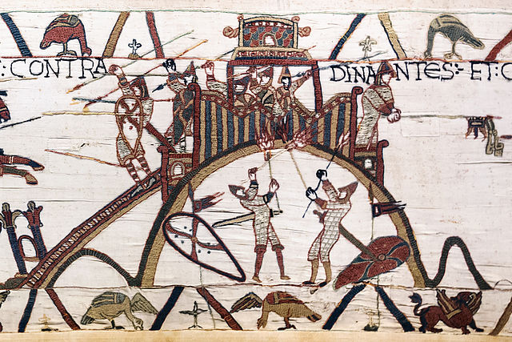
Quelle: Myrabella - Wikimedia Commons - abgerufen: 08.12.2021 - Lizenz: Public Domain
Erik Pontoppidan (der Jüngere, *03.09.1698 - 20.12.1764)
 Bildquelle:
Wikipedia - Lizenz:
Public Domain
Bildquelle:
Wikipedia - Lizenz:
Public Domain
hat in seinem Buch von 1739 "Marmora Danica selectiora sive Inscriptionum" auf der S. 348 einen kurzen Eintrag zu "Siøring Volde" bzw. "Siöring Vold".
In seinem weiteren Werk von 1769 "Den Danske Atlas" - Tomus V, Bind 1, IV. Cap., S. 452 (S. 28 in der pdf-Datei) - macht er diese Ausführungen zur Burganlage: "Vesten for Kirken ved Brogaard og tet ved Siøring Søe, ligger den bekiendte Siøring Vold, hvor i gamle Dage et lidet Slot skal have staaet, som Kong Nilaus skal have boet paa, den Tid Paris tiente ham, som hemmelig bortførde hans Dronning, hvorom den gamle Vise er giort: Fra Siøring Volde til Vester-Hav lader Paris kaste den Lønnegrav zc. Om denne Fabel har nogen Hensigt til den Historie, som skede i 12 Seculo med Kong Niels, hvis forlovede Gemahl Ulvilde af den Svenske Prinds Sverker blev undført, er uvist at sige. Pladsen, hvor Slottet har staaet, er paa en rund høi Jord-Banke, 24 Fod høi og oven 30 Skrit, men nederst 60 Skrit i Diameter. Grave og Volde ligge i en Runddeel deromkring, Graven 18 Skrit bred og Volden i sin Grundplan 12 Skrit. Volden, som er 24 Fod høi, er paa tre Steder giennemskaaren, hvor der har været Udfart og Broer fra Slottet. Saavel i Gravene inden for som rundt om uden for Volden skal tilforn have været Vand, men nu er det allevegne tørt og tilgroet".
Übersetzung: "...westlich der Kirche von Brogaard und dicht beim Siøring Søe liegt der bekannte Siøring Vold..." und "Der Platz, auf dem die Burg stand, befindet sich auf einem runden hohen Erdwall, 24 Fuß hoch und über 30 Stufen, aber am unteren Rand 60 Stufen im Durchmesser. Gräber und Wälle liegen in einem Kreis darum herum, der Wassergraben 18 Stufen breit und die Wälle im Grundriss 12 Stufen. Die 24 Fuß hohen Wälle sind an drei Stellen durchschnitten, wo es Ausgänge und Brücken von der Burg gab. Sowohl in den Gräbern innerhalb als auch außerhalb der Wälle muss vorher Wasser gewesen sein, aber jetzt ist es überall trocken und überwuchert."
Eine Zeichnung von Søren Abildgaard (*18.02.1718 - 02.07.1791, Zeichner, Kupferstecher und Geologe)
 Bildquelle:
Jellingprojektet - Lizenz:
Public Domain
Bildquelle:
Jellingprojektet - Lizenz:
Public Domain
aus dem Jahre 1767 mit den Maßen 25 x 38 cm zeigt den Grundriss der Burganlage.

Quelle: Digitale Sammlung Nationalmuseum Kopenhagen - Lizenz: CC-BY-SA - Unveränderte Wiedergabe
Der Text unterhalb der Zeichnung:
"A er den ophøjede Plan, hvor Slottet fordum har staaet, samme er 30 Skrit i Diameter, men Grundvolden af den ganske Ophøjning, der indbefattes, saa vel af Planen som dens skraa nedgaaende Sider a a a ned til Graven er 60 Skrit i Diameter, Graven C C C imellem bemeldte Ophøining og Volden er 18 Skrit breed, den yderste Vold B B B B er 12 Skrit breed i sin Grund-Plan, samme er ligesom den i Midten liggende Ophøining A 24 Fod høj, ved D, E, F, er Volden giennemskaaren, hvor der har været Udkiørsel og Broer fra det gamle Slot. Saa vel i Graven som rundt om den yderste Vold skal tilforn have været Vand, men nu er det allevegne tørt og tilgroet. Paa Vestlig Side grændser denne Borg til Siøring Søe".
Übersetzung: "A ist der erhöhte Platz, wo früher die Burg gestanden hat, derselbe hat 30 Schritt im Durchmesser, aber das Fundament der gesamten Erhöhung, das es umfasst, mit den schräg abfallenden Seiten a a a bis zum Graben, beträgt 60 Schritt im Durchmesser, der Graben C C C zwischen der Erhöhung und dem äußeren Wall ist 18 Schritt breit, der äußere Wall B B B B ist in seinem Grundriss 12 Schritt breit, er ist wie die Erhöhung in der Mitte A 24 Fuß hoch (Anm.: 31,38 cm x 24 = ca. 7,50 m), bei D, E, F, ist der Wall durchschnitten, wo es Ausgänge und Brücken von der alten Burg her gegeben hat. Sowohl im Graben als auch um die äußersten Wälle herum muss es vorher Wasser gegeben haben, aber jetzt ist es überall trocken und überwuchert. Auf der Westseite grenzt dieses Schloss an den Siøring See."
In der digitalen Sammlung des Nationalmuseums Kopenhagen finden sich zwei weitere Planzeichnungen. Die ältere von E. Sørensen aus dem Jahr 1825 (Original 34 x 57 cm).
Die zweite Zeichnung stammt wohl aus der Feder von Rasmus Henrik Kruse (*07.08.1796 - 30.05.1877, Landschaftsmaler - link-LIVES)
 Bildquelle:
Det Kgl. Biblioteks billedsamling - Lizenz:
Public Domain
Bildquelle:
Det Kgl. Biblioteks billedsamling - Lizenz:
Public Domain
und ist mit der Jahresangabe 1838 versehen. (Original 20 x 34 cm). Im oberen Bereich ist seine Skizze zur Burganlage im Spering See und im unteren Bereich die Anlage "Sjörind Vold" wiedergegeben. Links unten in der Ecke ist "Fra Pastor Madelung" vermerkt. Es handelt sich dabei um den geschichtsinteressierten damaligen Pfarrer von Vang, der den Runenstein von Sjørring (Vang, DR 155) ankaufte und diesen danach in das Waffenhaus seiner Kirche nach Vang bringen ließ. Die Entfernung zwischen der Wallanlage und der Kirche in Vang beträgt ca. 8 km.
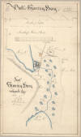 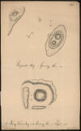
Allerdings sieht mir das so aus, als ob die beiden Planzeichnungen auf dem einen Blatt nur Kopien der Originale sind, die sich in seinem handschriftlichen Manuskript "Nørre Jyllands Mærkværdigheder i det 19. Aarh. Hs. Bd 1-2 (med) Tillæg 1-2" befinden. Im 1. Band hat Kruse neben den beiden Zeichnungen - die aber von 1841 sind - auch handschriftlichen Text auf den Seiten 21-24 vermerkt - siehe unten.
Diese wunderschöne Gouache von Rasmus Henrik Kruse (*07.08.1796 - 30.05.1877, Landschaftsmaler) aus dem Jahr 1838 (Original 8,5 x 15,5 cm) hat sich in seinen "Nørre Jyllands Mærkværdigheder i det 19. Aarh. Hs. Bd 1-2 (med) Tillæg 1-2" - im Band 1, Bild 22, erhalten, die sich im Nationalmuseum in Kopenhagen, Antikvarisk-Topografisk Arkiv, befinden. Auf Anfrage wurde mir diese freundlicherweise von einem netten Mitarbeiter des dem Nationalmuseum in Kopenhagen angehörigen Archivs abfotografiert und mir per E-Mail am 03.03.2022 übermittelt - Mange tak! - Aufgrund ihres Alters ist dieses Werk nach dänischem Recht frei von Urheberrechten. Zu der Zeit war der See - siehe links - noch nicht trockengelegt.
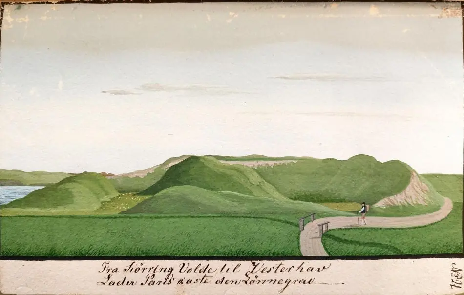
Inzwischen habe ich dieses 4-bändige Werk von Rasmus Henrik Kruse bei meinem Studientripp nach Kopenhagen am Dienstag, 27.09.2022 in meinen Händen halten dürfen.
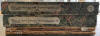 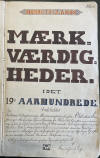 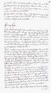 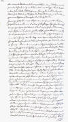 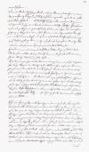 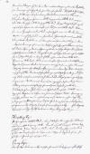 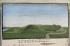 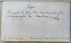 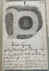 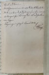 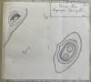


Die handschriftlichen Aufzeichnungen, die Gouache und eine weitere Skizze zu der Burganlage befinden sich im Band 1, ab S. 21ff.
Aus dem Jahr 1848 stammt diese Karte die sich als Tafel II in dem Artrikel "Sjøringvoldes Beskrivelse og Historie" - von A. C. Fabricius - Antiquarisk Tidsskrift 1847 - S. 181-192 - befindet.
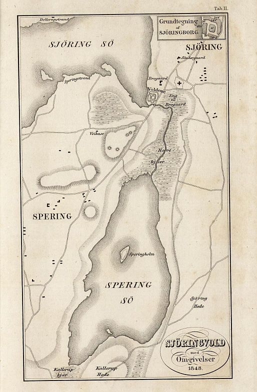
Bei meinen Internetrecherchen zu Sjørring Volde fand ich heute - 08.12.2021 - in der digitalen Sammlung der Königlichen Bibliothek zu Kopenhagen eine weitere Planzeichnung in "Dr. I. G. Burman Beckers antiqvarisk-topografiske Samling". Dieser Dr. Johan Gottfried Burman Becker (*26.04.1802 - 06.10.1880 - link-LIVES) war Apother und historischer Sammler.
 Bildquelle:
Det Kgl. Biblioteks billedsamling - Lizenz:
Public Domain
Bildquelle:
Det Kgl. Biblioteks billedsamling - Lizenz:
Public Domain
Darauf ist unter der oberen Zeichnung der folgende handschriftliche Text vermerkt: "Profil af Siörring Volde i Thÿe" - Unter der mittleren Skizze steht in der 1. Zeile: "Grundrids af Siörring Volde i Thÿe" - in der 2. und 3. Zeile: "Borgpladsen 190 Skridt i Omkreds, 22 Skridt foroven i Tvermaal. Den nordlige Vold 12 Alen høi, 12 Skridt bred foroven" - Am unteren Bildrand steht: "Sidste Levning af Hindsgavl 1849"

Lizenz Public Domain - Unveränderte Wiedergabe
Durch J. B. Løffler (*30.09.1843 - 19.12.1904, Dänischer Architekt, Archäologe und Titularprofessor - link-LIVES)
 Bildquelle:
Wikipedia - Lizenz:
Public Domain
Bildquelle:
Wikipedia - Lizenz:
Public Domain
wurde im Jahr 1877 diese Zeichnung angefertigt, die eine Pfostenreihe zeigt, die wohl von einer Brückenverbindung zur ursprünglichen Burg stammt.
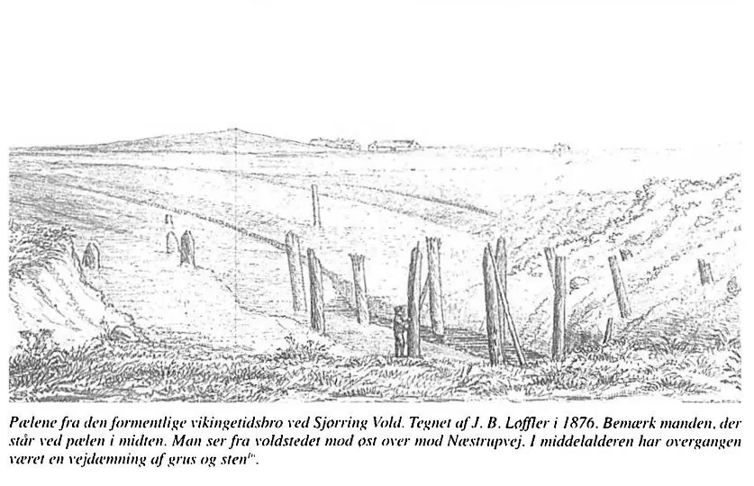
Bildquelle: S. 16 in Borgen i Sjørring - historien om udgravningen, der blev væk - von Anne-Louise Haack Olsen - aus: Historisk Årbog for Thy og Vester Hanherred - 1999 / Lizenz: CC BY-SA 4.0
Übersetzung: "Die Pfeiler der vermutlich aus der Wikingerzeit stammenden Brücke bei Sjørring Vold. Gezeichnet von J. B. Løffler im Jahr 1876. Beachten Sie den (kleinen) Mann, der an der Stange in der Mitte steht. Blick von der Stadtmauer nach Osten in Richtung Næstrupvej. Im Mittelalter war der Übergang ein Straßendamm aus Kies und Steinen."
Sophus Müller (*24.05.1846 - 23.02.1934, dänischer Prähistoriker - link-LIVES)
 Bildquelle:
Wikipedia - Lizenz:
Public Domain
Bildquelle:
Wikipedia - Lizenz:
Public Domain
hat in seinem Buch Nordische Altertumskunde - Übersetzung. Dr. Otto Luitpold Jiriczek (*18.12.1867 - 03.07.1941, deutscher Sprachforscher), Karl J. Trübner Verlag, Straßburg 1898. Bd. II, S. 243, diese Zeichnung - Künstler unbekannt / signiert mit "F.H.fot" - wiedergegeben. Ich habe davon einen Scan aus der in meinem Besitz befindlichen Ausgabe für die Wiedergabe hier gefertigt.
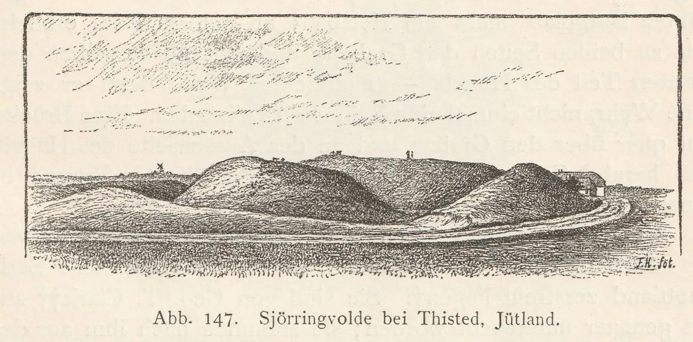
Viele Jahre lang wurde auch ein großes Schützen- und Turnerfest bei Sjørring Vold abgehalten. Dazu wurde in der Zeitung "Thisted Amts Tidende" mehrfach eingeladen, so auch in der Ausgabe vom 01. Juli 1908 - siehe unten.
Das Fest fand dann bei bestem Wetter mit zahlreichen Besuchern statt, wie danach in den Zeitungen berichtet wurde. Außerdem fanden Mitte der 1960er Jahre auch z.B. Pop Konzerte und Tanzveranstaltungen der regionalen Gruppe "The Others" am Sjørring Vold statt.
Google StreetView Ansicht - Screenshot vom 29.08.2021
Dieses Luftfoto (Ausschnitt von mir angefertigt) ist von der Webseite "Skråfoto" - Lizenz: CC BY 4.0 - Aufnahmedatum 02.05.2017 (Download 08.12.2021). Skråfoto ist eine Webanwendung, die von Klimadatastyrelsen weltweit kostenlos bereitgestellt wird. Die Aufnahmen werden seit 2017 alle zwei Jahre erneuert und neben einer Senkrechtaufnahme wird ein Schrägbild aus jeder Himmelsrichtung angeboten, das man über eine Adresssuche aufrufen kann.
Die Informationen in "Fund og Fortidsminder" zu der Burganlage finden sich hier.
Auf der Webseite von "1001 fortaellinger om Danmark" findet sich auch eine Eintrag zum Sjørring Vold mit Infos in dänischer Sprache und einigen Fotos. Darin ein sw Luftfoto von 1957 von Hans Stiesdal (*06.05.1922 - 02.09.1998, Dänischer Historiker und Archäologe) - Lebensbeschreibung (in dänischer Sprache) und Portraitbildnis über Egedal Leksikon. Er ist in Dänemark der Pionier für Luftbildarchäologie gewesen, flog seit 1950 über Dänemark hinweg und trug so zur Entdeckung zahlreicher antiker und mittelalterlicher Überreste im ganzen Land bei. Darüber hat er auch Sjørring Vold dokumentiert. In Nationalmuseets Arbejdsmark 1959 findet sich eine Abhandlung von ihm mit dem Titel "Arkæologi fra Luften" auf den S. 21 - 33 (Ab S. 22 in der pdf-Datei).
Innerhalb der Webseite "Historisk Atlas" findet sich auch eine Abhandlung zu Sjørring Voldsted. Auch hier wird das sw Luftfoto von 1957 von Hans Stiesdal gezeigt.
Literaturhinweise:
Physisk, oeconomisk og topographisk Beskrivelse over Thye beliggende i Thisted Amt, Aalborg Stift - Knud Aagaard, 1802, Anmerkung zu "Sjøring Volde" - S. 146ff. (ab S. 157 in der pdf-Datei)
Sjøringvoldes Beskrivelse og Historie (mit Tafel II) - von A. C. Fabricius - Antiquarisk Tidsskrift 1847 - S. 181-192
Kapitain Jagd - Om Udtørringsforetagender i Almindelighed og om Udtørringen af Sjørring Sø i Særdeleshed - Tidsskrift for Landøkonomi, 60, 1874, S. 318-342
Ole Bang - Sjørring Sø - Historisk Årbog for Thisted Amt 1908, S. 24‑36 - S. 25 in der pdf-Datei
Sjørring Volde - P. L. Hald - aus: Historisk Årbog for Thisted amt 1921, side 287-294
Idrætten og dens Udvikling - af Redaktør Holger Hebsgaard - Landet mod Nordvest - Band 2 - 1947 - S. 291-306 (Beitrag der u.a. die Sportfeste am Sjørring Vold behandelt).
Sjørring Volde og Rasmus Henrik Kruse - Jytte Nielsen - aus: Historisk Årbog for Thy og Vester Hanherred 1993, S. 7-8
Borgen i Sjørring - Anne-Louise Haack Olsen - aus: Historisk Årbog for Thy og Vester Hanherred, 1999, S. 9-18